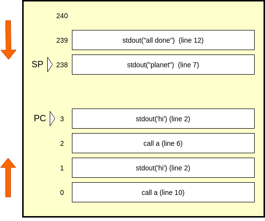
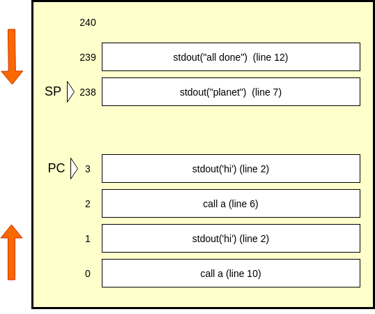
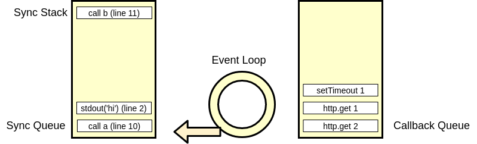
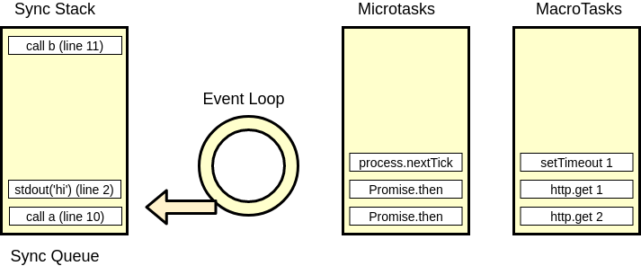

How node actually works, part 2: the event loop
How much could one more inch hurt? We're talking about having confidence in Javascript interviews, and what do you say when you're asked "what is node", or "how does node handle asynchronous code". How node talks to the operating system is explained in part one. Now that we know we are receiving a multiplexed stream of file descriptors which are ready to be read from or written to, we are ready to talk about what we do with those fds.
Before asynchronous code, there was synchronous code.
Synchronous Code
So far all you really know about how Javascript scripts are executed is roughly the order in which things happen. Let's take a look at an example script, and what our steps our computer takes to do the work we want it to do.
1. const a = () => {
2. console.log('hi')
3. return
4. }
5. const b = () => {
6. a()
7. console.log('planet')
8. return
9. }
10. a()
11. b()
12. console.log('all done')
Our CPU has to worry about more than just the console logs, it has to worry about the order of instructions that it carries out. The first line it cares about is 10, and then it will want to look up the definition of a, which really starts at line two. When it returns, we then skip to line 11. How does our CPU keep track of that? How does it know to go back to 11?
Let's divide our system memory into two parts:

Before you get confused, here's what everything means: our memory is a zero indexed structure. We load up our instructions starting at index 0. These instructions are similar to our javascript code, but not exactly. They the machine code we talked about earlier that our JS gets translated into. Call and return get their own instructions, and beside those, we only call stdout. These are the 'real' instructions that any human readable language gets translated into. It's called machine code, and each instruction string is associated with a binary CPU instruction, which is different for every instruction set. This structure grows up, and it is a first in, first out queue.
Starting at index 240, we have a stack. This stack grows down, which is confusing, and means that when we push onto the stack, we have to decrement the index which is the 'top' of the stack, which we call the stack pointer, or SP. When we pop, we will increment it. Our total memory, which is split between the queue and the stack only goes to index 255, which makes it an 8 bit CPU emulator. Above index 240, we have locations where we can store things we don't have to worry about today.
Most importantly, the index of the currently executing instruction is stored in the program counter, or PC. A part of our flow of execution is decrementing the PC to execute the next instruction, of course unless our instruction specifically sets the PC to something else, which we will discuss next.
The call instruction does two things.
- Decrements the SP.
- It pushes the return address onto the stack. This is a reference to the instruction we should execute after the current function returns.
- It sets PC to the current instruction's definition. This is really a reference to the first instruction in the definition.
Here's what our memory looks like after we run call on line 10:

We have the SP point to line 11 in the stack, and our PC points to line 2. We execute line two, which prints 'hi' to the user, and set PC to the return on line 3. People don't ordinarily put explicit returns at the end of void functions, but here we are trying to be really transparent.
The return instruction
- Pops the return address off the stack at the SP.
- Stores the return address in the PC.
- Increments the SP.
Our stack currently only has line 11 on it, so we pop it, and point the PC to it. At this point, our SP is pointing to an empty memory[240], and or PC is at memory[239]. That instruction happens to be line 12, which is an stdout, and our PC will point to line 6, which is another call. Here's how those two steps look.
 

A nested function causes our stack to grow to size 2, and now we are starting to see the point of the stack. The user will see a second 'hi', then 'planet', then 'all done', as we reach return statements in our script.
What is the point of explaining how an 8 bit CPU emulation could handle a JS script? When we say a function is blocked, we mean to say that a return statement of the last function hasn't been executed, and our PC does not point to our blocked function in order to execute it. We are blocked because the stack operations and the script's functions are all in the same thread of execution. We can't risk placing network calls into this queue in the order in which they appear in the code, because who knows how long that will block. In order for asynchronous code to work, we have to curate the order that instructions are executed in. The queue in our memory we will call a message queue, and the problem is how to execute asynchronous instructions so that they don't get in the way of synchronous code.
Let's say thet we want to make a call to a google maps API in our code to get some location data for a store.
The classic solution is to use a thread to wait on the response, and when the call comes in on the other thread, we interrupt the current thread, and insert our data into the message queue. However, as we discussed in the previous article , we avoid threads because of the memory requirements and the latency overhead of context switching. The nice thing about threads is that you don't need a schedular. When a thread comes back with some data, we interrupt our main thread, and place that data into our message queue. Without threads, we need a scheduler and a way to execute synchronous code associate with asynchronous code. For instance, making a get request to google maps API is asynch, logging to stdout is synch. Our sheduler is the event loop.
Event loop concept.
If we were using threads, and we had a separate thread for each async instruction, scheduling is not a problem, because when the instruction comes back with some output, we could interrupt our main thread and place the data on the message queue. However, without threads, we have the problem of scheduling. Let's remember one thing - we are working on an event stream which will tell us when some network call comes back. When that call comes back, we can execute some code we passed as a callback on whatever the network data is. That callback is executed by placing on a message queue. But this thing that places it on the queue - how does it know the network call completed? Remember select()?
With select, we would loop through our registered file descriptors, and send back just the ones ready for a read or write operation, and this could be a thousand different files. However, with things like network events, we can place all network i/o events into one bucket - the network io bucket, and we can check that bucket, as well as other types of buckets. For instance, using setTimeout(callback, timeout) registers a function in the setTimeout bucket, and at the beginnign of every loop, we can check the current time, and if it is greater than the timeout, we can invoke the callback. Then we can check the other bucket, until we loop back around. That is the idea behind the event loop.
Steps in our loop
- Check what time it is
- Check if timers set in setTimeout should invoke the callback
- Check if timer in setInterval should invoke the calback
- Check callbacks we may have postponed from last time
- Check for I/O events and their callbacks
- Check if there are any setImmediate callbacks to run
- Check for any close callbacks, such as connection.on('close'...
As you can see, there's a specific order, and some of it may leave you scratching your head. Why is setImmediate not the first step? Because I/O and timer callbacks often use setImmediate to make sure they delay certain code from happening, and we want to get to that code as soon as possible.
Another question is, how does this talk to our little emulator? How do we get these callbacks to run, if we have synchronous code blocking on our call stack? Well, sometimes the call stack is empty, and that's when we check if there are any async callbacks to execute. You may assume we place these instructions on their own queue, and you're right, and we can call this queue the callback queue for now.
This is what our model looks like now.
So far, we have sort of figured out how to place async code onto our sync call stack to execute it. We have a loop checking for async events to get done, then we place the callback associated with those events onto our sync callstack only when it is empty. This would explain this sort of code:
console.log('Script Start')
setTimeout(()=>{
console.log('First SetTimeout')
setTimeout(()=>console.log('Second SetTimeout'), 0)
}, 0)
setTimeout(()=>console.log('Third SetTimeout'))
console.log('Script End')
// Output:
// Script Start
// Script End
// First SetTimeout
// Third SetTimeout
// Second SetTimeout
Notice, our Script End message is printed, then we start with the setTimeouts. This is because until we pop the last sync instruction off the call stack, it is not empty, and the callback queue is not even checked. The first setTimeout make sense, but what is with the order of the next two? Shouldn't we execute them in order? The reason is that the event loop does not know about the second setTimeout callback until the first is invoked, and by that time, the third has already been appended onto the queue. Every time we take a callback off the queue and execute its code, we call this a tick. The first tick can be considered the sync code, the next is first setTimeout, and then the third and second.
Promises
So, we have these large tasks, but what about things like thenables? Remember writing a get request, and taking the response of an axios call that was a promise, doing something with it in a .then method, and it all happened in the order you wanted it to? Let's take a look at this code:
setTimeout(()=>{
console.log('First SetTimeout')
setTimeout(()=>console.log('Second SetTimeout'), 0)
}, 0)
Promise.resolve()
.then(()=>console.log('First Then'))
.then(()=>console.log('Second Then'))
// Output:
// First Then
// Second Then
// First SetTimeout
// Second SetTimeout
We would expect the output to be much different. Our first tick should be the first time out, and our second the first then. However, this is clearly not happening. Let's add yet another queue, and now finally we are following the ecmascript 6 spec, and distinguishing between macrotasks (tasks in es6) and microtasks (jobs in es6). We are changing our callback queue to macrotask queue, and we are adding a microtask queue in the middle. The rules are, if we have anything in the microtask queue, put all of it on the callstack, and only then go back to the next tick. Meaning, we have a step at the end of each tick that checks the microtask queue. This is weird, because both a macrotask and a microtask can themselves add to the microtask queue, potentially blocking our event loop indefinitely.
The new rules are: callbacks passed to the then method on promises get pushed onto the micro task queue. So, if you do axios.get(...).then(res => console.log(res.data)), the network call itself is a macrotask that gets checked in the network I/O phase of the event loop. When this macrotask is resolved, it places the callback passed to .then onto the microtask queue, and so will invoke the console.log in the same tick as the network call. A shortcut to appending microtasks this way is simply to use Promise.resolve().then(callback), however this resolves synchronously, and therefore appends the callback onto the microtask queue of the synchronous tick.
process.nextTick
Another way to place callbacks onto the microtask queue of the current tick is to use process.nextTick(). That's right, today we learn that the people who designed these systems simply have no respect, and that's why they named the method that uses this tick as next tick, and the one that places on next tick as setImmediate. To add insult to injury, process.nextTick(callback) takes priority over anything else, and so will place its callback above Promise.resolve().then(callback), but will not supercede an earlier invocation of another process.nextTick().
process.nextTick(()=>console.log('First NextTick'))
console.log('First Sync')
setTimeout(()=>{
Promise.resolve().then(()=>console.log('First Promise'))
console.log('First Timeout')
setTimeout(()=>{
Promise.resolve().then(()=>console.log('Second Promise'))
console.log('Second Timeout')
}, 0)
}, 0)
Promise.resolve().then(()=>console.log('Third Promise'))
process.nextTick(()=>console.log('Second NextTick'))
console.log('Second Sync')
// Output
// First Sync
// Second Sync
// First NextTick
// Second NextTick
// Third Promise
// First Timeout
// First Promise
// Second Timeout
// Second Promise
In the first tick, our sync tick, we print from First Sync to Third Promise. Remember, thenables place onto same tick as long as they resolve synchronously, and so does nextTick, but nextTicks take priority over promises in the order. In the second tick, we have First Timeout and First Promise, because setTimeout is a macrotask that gets its own tick, and also uses a promise to place a callback on the microtask queue which must be invoked before the next tick. This macrotask also calls another macrotask, the second setTimeout, which also uses a promise.
libuv
You might be thinking, what part of Nodejs is this? How is the event loop built? This part is called libuv, and it's written in c++. It can't be written in Javascript because JS doesn't have the tools to talk to the operating system that c++ does, and is also slower.
You may also be thinking, what's the point? Why promise.nextTick? Have you ever seen code like this?
app.connect()
app.on('connect', ()=>console.log('app connected'))
How can we configure what to do on connect after the connect? If the connect method uses process.nextTick, it will always be run just after all of the synchronous code is popped off the call stack, and it will always be the first callback on the microtask queue. If we used setImmediate, we would actually have to wait for another tick, hurting performance.
V8
If the event loop is implemented in a library called libuv, what implements our emulator? What takes javascript, and turns into a queue of CPU instructions that we can push and pop off a call stack? That part is called V8, and it's a doozie. The first thing you need to know about V8 is that Google made it, so you know it's fast and complicated.
Compilation
You have heard me refer to an underlying language which is simply instructions for the CPU, and you know that Javascript is also a language. You also know that Javascript is optimized for certain things: readability, functional composition, ease of learning, but you know that speed is also something you must optimize for. If you optimize for things other than speed, you get those things at the cost of speed. So, how did Google make JS fast?
An interpretted language, in the literal sense, is turned into CPU instructions line by line. Bash is interpretted, and so is python, which makes it easy to use - just type 'python3' into terminal, and you drop into the python3 interpretter, which allows you to run a program line by line. However, we know that JS applications are large and we are no longer dealing with 'scripts'. Node is also a server, and so must be reasonably efficient, or else will be too expensive to run at scale. How do you go about optimizing an interpretted language?
Like we know of interpretted languages, we also know of languages that compile into a different language. Languages like c and go compile to either machine code, or something close to machine code. This means that we had a nice human readable language to write programs in, but when it came to running the programs, we compiled them into more efficient languages. If JS is compiled, how come I can't find the compiled code?
Ignition
What if, instead of interpretting line by line, or compiling the whole program, we interpretted it by chunks into something like machine code, then optimized on that code? The thing in V8 that changes Javascript to lower level code is called ignition, and that lower level code is called byte code. Right now we have high level, human readable code, and we have very low level machine code that is made of CPU instructions. Those instructions change from machine to machine, since there are many different instruction sets and their implementations on various machines. Byte code looks a lot like assembly language, except it doesn't map directly to a single machine's instructions, but to any machine's instructions. How it does that is abstracted away from us, but regardless it is very low level, and so we are able to optimize on top of it.
function print(obj) {
return console.log(obj.hello + " " + obj.world)
}
print({ hello: "hello", world: "world" })
Is translated into
[generated bytecode for function: print]
Parameter count 2
Register count 3
Frame size 24
14 E> 0x236ae3ae114e @ 0 : a5 StackCheck
24 S> 0x236ae3ae114f @ 1 : 13 00 00 LdaGlobal [0], [0]
0x236ae3ae1152 @ 4 : 26 fa Star r1
39 E> 0x236ae3ae1154 @ 6 : 28 fa 01 02 LdaNamedProperty r1, [1], [2]
0x236ae3ae1158 @ 10 : 26 fb Star r0
47 E> 0x236ae3ae115a @ 12 : 28 02 02 04 LdaNamedProperty a0, [2], [4]
0x236ae3ae115e @ 16 : 26 f9 Star r2
0x236ae3ae1160 @ 18 : 12 03 LdaConstant [3]
53 E> 0x236ae3ae1162 @ 20 : 34 f9 06 Add r2, [6]
0x236ae3ae1165 @ 23 : 26 f9 Star r2
65 E> 0x236ae3ae1167 @ 25 : 28 02 04 07 LdaNamedProperty a0, [4], [7]
59 E> 0x236ae3ae116b @ 29 : 34 f9 09 Add r2, [9]
0x236ae3ae116e @ 32 : 26 f9 Star r2
39 E> 0x236ae3ae1170 @ 34 : 59 fb fa f9 0a CallProperty1 r0, r1, r2, [10]
71 S> 0x236ae3ae1175 @ 39 : a9 Return
Constant pool (size = 5)
Handler Table (size = 0)
As you can see, much lower level. Ignition however doesn't just translate JS into byte code as fast as it can, it helps the optimizers by keeping track of patterns in your code. For instance, JS doesn't care if you give a funcition a string or a number to operate on, since it's a loosely typed language, however if you are consistently calling a particular funcition on a certain data type, it will keep this information stored in something called the feedbackVector. After doing this, ignition will indeed interpret that byte code, so you very quickly see a representation of a webpage, even if it isn't optimized yet. If you run the script again later, V8 will use turbofan to optimize on the bytecode further using information stored in feedbackVector.
Turbofan
Turbofan is an 'optimizing compiler', and its job is to optimize your bytecode, specifically functions that you use over and over. These functions are called 'hot' code, and they are identified by something called a runtime profiler. The reason this thing is a big deal is that before we had something called crankshaft that did this job, however it had trouble with new ecma script updates, and was structured such that updating the language features that it optimized was difficult, because it didn't work on the byte code, but a stage between JS and bytecode called the parse tree. If you think your job is tedious, there are engineers at Google who sit around and optimize one JS language feature at a time.
If you are confused as to what the order of things are, you're not alone. Turbofan is not just a set of optimizations, but actually has all the tools to do the job of executing and optimizing JS. It has a 'frontend' part that turns JS into byte code, an 'optimization' layer that works on that byte code, and a 'backend' layer that does some bytecode generation, and some optimization. Iginition uses the backend to do its job, and the reason it exists at all is that that latency of optimizing code on the first run through would mean that the user would see a small hickup before his page loads quickly.
Bindings
We've mentioned that a lot of nodejs is written in not Javascript. How is it that we can reference node in our scripts, then? JS has no way to talk to an operating systems files, for example, and yet node let's us do it. Since c++ does have access to these system calls, nodejs comes with a layer of c++ bindings that allow the JS code exposed in node to reference c++ language features. These are just another feature of node, which is described is an environment that combines libuv, V8, c++ bindings, and more to allow us to build servers out of Javascript.
At this point, most people think they are done. However, there is one feature we only briefly mentioned, but one that is very important, and that's promises. Tune in next time, when we deconstruct promises and async/await, and wonder if there really is such a thing as too big.